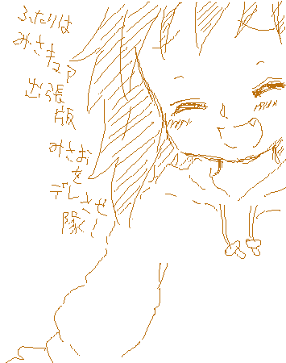
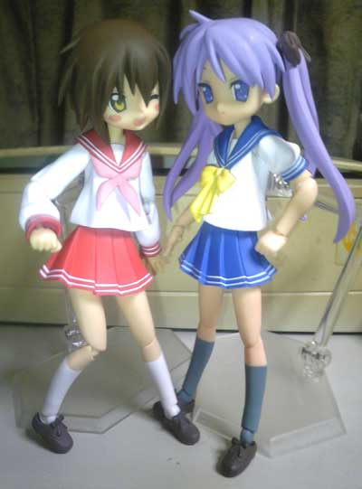
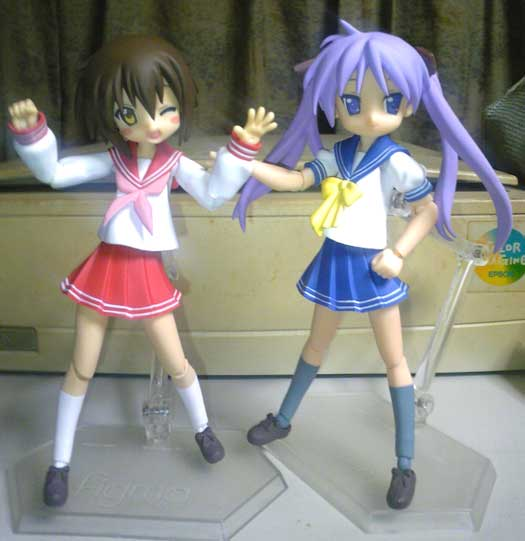
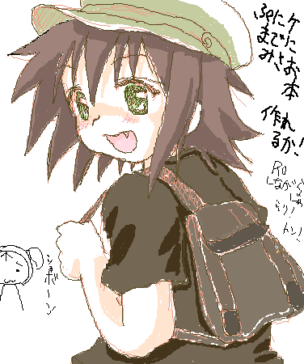

たいした更新では無いのですが、左のイラスト欄がだだ長に伸びてしまうので(笑
最近練習してるみさお絵チャ絵などを～ｖ
{kind=link}
左がくるみるくさんとの合同誌の表紙案ｖ
スキマにかがみん達を入れてにぎやかな感じにしようかとｖ
みさお好きの方！ゲスト寄稿募集してますのでよろしくおねがいします！(_ _ヾ
右は少しでも高校生らしく、5.5頭身で描くかロリ幼く4.5投身にするかというー。
5.5投身でかわいく！ がいいと思うのですがどうでしょう～
…そして

どれみ絵チャにちょっと出張みさおっち！ｖ
そして入室されていらしたパスキーさんが食いついてきて
描いてみるもんだなーｖ なんて思いましたｖ
みさお合同誌にお誘いしちゃっていいかナー？なんて（＾＾*

そして最後に原作7巻模写含めたパーカースタイルみさお～ｖ
スカートなのは多分完全に私の趣味ｗ
みさお本の漫画では色々な格好させてあげたいので
精鋭練習しようと思いますｖ
…ってなわけでみさお絵チャ、大犬さんと一緒に楽しんでますので
みさおが好きな方、是非歓迎するので連絡くださいｗ
（更新日 10年1月19日TUE.）
生まれて初めてfigmaというものを買ってみましたｖ
かなり出来の良いみさおふぃぎゅあーですよっ これは話に聞いて大注目！
以前からfigmaは腕の関節とかちょっと苦手だなーとか思ってて、
冬服ならそんな気にならないかな？と思って、しかもみさおだしと思って
amazonポチりに至った訳ですが、これがなかなか楽しいｖ

原作じゃありえないかがみんみさおらぶらぶショットｖ
嬉しそうなみさおに、こちらも微笑んでしましますｗ（ｷﾓｰ；
他にもいろいろ

記念撮影して楽しんでマスｖ
友人が来たときにでもかがみんの顔を笑顔verにして
みさおに抱きついてる(寸前w)のシチュとかやろうかなぁとか思ってますｖ
さぁみさお好きのみなさん！（そんなにｲﾈｰ；
楽しいですよー、オススメですｖ
（更新日 10年1月19日TUE.）

らき☆すた日下部みさお絵チャ描き～ｖ
ほぼ原作漫画５巻の表紙絵の左右反転ですが；
この時はぷにケ合わせでみさお本作りたいなーって思ってたけど
戦艦大和煮センセに諭されて
背景以外の線画の出来上がってるはづきちゃん本を出したいと路線変更。
絵に書いてあるとおりROしながらじゃ無理って感じですが；
今日無料サーバがまた始まってふたば二次元裏のメンバー８人プレイも
始めちゃったし； 明日の夕方からまた集まる予定；
それに加えて夜は仲良しになった二人と一番楽しい３人狩り、
最初から初めて見逃してた要素を見てくる新キャラプレイ朝方、
・・・１日中RO三昧なのだわ；
多分ふたばのメンバーは段々集まり悪くなってくると思うので
夕方あたりはお絵描きの時間にあてられるようにしたいです；
…ともかくみさお！ラブリーみさお！
近くのimaginに売ってるうちに背景コンビCDも買おうかしらｗ
いやぁ、最近現実逃避気味ながら充実してるなぁ…
ずっとこんな気持ちが続くといいのだわ
09年1月に描いた絵
（更新日 09年1月27日TUE.）
{kind=link}
コミスタ練習らき☆すたみさお漫画風絵。↑クリックで展開。とりあえず何も内容が無い
絵になってしまいましたが、コミスタの操作とトーン張り込みで画面密度を上げる
練習等。もっと上手くなってガーン！とラブラブなみさお漫画を描きたいです(^^;
マイペースに頑張りたいと思います。どうか応援よろです。
08年11月に描いた絵
（更新日 08年11月17日MON.）